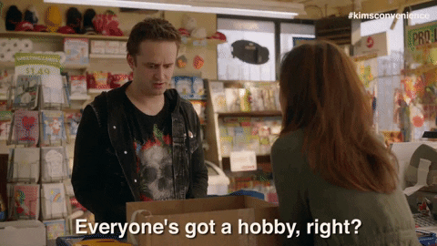

Bio
I was born on July 18th and raised in Chandigarh, where my lifelong fascination with technology began. Growing up in a city known for its modern architecture and urban planning, I was inspired by the potential of technology to transform our world. This ignited a deep passion within me to contribute meaningfully to the tech industry and make a positive impact. From a young age, I immersed myself in the world of computers and programming, realizing the immense power technology holds. Pursuing a formal education in computer science provided me with a strong foundation in fundamental principles and the skills needed to navigate the ever-evolving tech landscape. However, my passion extended beyond academics. I engaged in various projects, hackathons, and collaborations, continuously seeking to expand my knowledge and skill set.
Through these experiences, I discovered my true calling in using technology to solve complex problems and drive innovation. Whether it was developing streamlined applications, designing efficient algorithms, or exploring emerging technologies like AI and blockchain, I consistently pushed the boundaries of what was possible. Moreover, I recognized the significance of incorporating user-centric design and ethical considerations, ensuring that the solutions I created had a positive impact on people's lives.
I progress in my career, I envision myself playing a pivotal role in shaping the future of the tech industry. My goal is to contribute to groundbreaking projects that revolutionize sectors such as healthcare, education, sustainability, and more. Alongside my technical expertise, I prioritize collaboration, innovation, and diversity, understanding that technology's true potential lies in its ability to bring people together and address real-world challenges.
Raised in Chandigarh, I am equipped with the knowledge, skills, and unwavering determination to make a difference. My journey as a tech enthusiast and computer scientist has laid a solid foundation, and I am ready to leave a lasting impact on the world through my contributions to the tech industry.
Education
- BS honors in CS: Iowa State University, Iowa, US
- Grade 4-12: Gurukul Global School, Chandigarh, India
- Grade Playway-4: Modern Secular Public School, Punjab, India
Work experience
Junior Content Writer: Netqom Software pvt. ltd.
Duration:
July 2021- August 2022Roles:
- Collaborated with clients to develop content that met their needs.
- Proofread and edited work.
- Assisted with creating reports on content performance.
Skills
- Java
- HTML
- CSS
- Excel
- Canva
- Problem-solving
- Critical-thinking
- Teamwork
- Leadership
- Time-management
Awards
- Young einstein of the year 2019
- Mathematician of the year 2018
Hobbies

For more information
 Contact me here
Contact me here